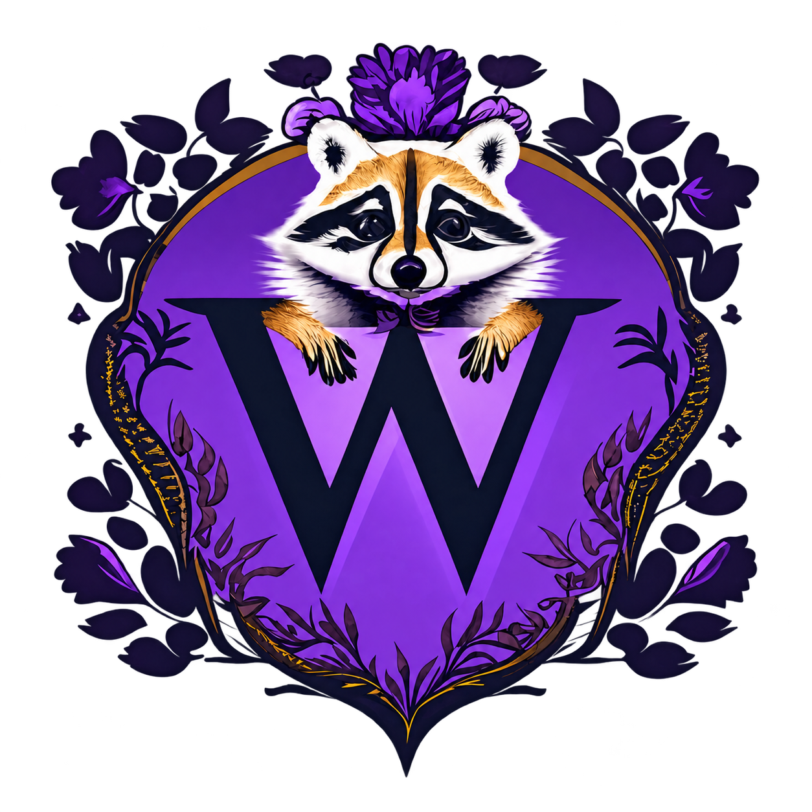

Wor
o
bi
Worobi
A name. A
home.
A quiet place for the people who keep a page here.

Personal pages
Personal page
Brandon
Open page →
Personal page
Nevaeh
Open page →
Personal page
Alexander
Open page →
Personal page
Jefferson
Open page →
Personal page
Charlotte
Open page →